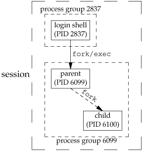

9.10. Orphaned Process GroupsWe've mentioned that a process whose parent terminates is called an orphan and is inherited by the init process. We now look at entire process groups that can be orphaned and how POSIX.1 handles this situation. ExampleConsider a process that forks a child and then terminates. Although this is nothing abnormal (it happens all the time), what happens if the child is stopped (using job control) when the parent terminates? How will the child ever be continued, and does the child know that it has been orphaned? Figure 9.10 shows this situation: the parent process has forked a child that stops, and the parent is about to exit. The program that creates this situation is shown in Figure 9.11. This program has some new features. Here, we are assuming a job-control shell. Recall from the previous section that the shell places the foreground process into its own process group (6099 in this example) and that the shell stays in its own process group (2837). The child inherits the process group of its parent (6099). After the fork,
Here is the output from the program shown in Figure 9.11:
$ ./a.out
parent: pid = 6099, ppid = 2837, pgrp = 6099, tpgrp = 6099
child: pid = 6100, ppid = 6099, pgrp = 6099, tpgrp = 6099
$ SIGHUP received, pid = 6100
child: pid = 6100, ppid = 1, pgrp = 6099, tpgrp = 2837
read error from controlling TTY, errno = 5
Note that our shell prompt appears with the output from the child, since two processesour login shell and the childare writing to the terminal. As we expect, the parent process ID of the child has become 1. After calling pr_ids in the child, the program tries to read from standard input. As we saw earlier in this chapter, when a background process group tries to read from its controlling terminal, SIGTTIN is generated for the background process group. But here we have an orphaned process group; if the kernel were to stop it with this signal, the processes in the process group would probably never be continued. POSIX.1 specifies that the read is to return an error with errno set to EIO (whose value is 5 on this system) in this situation. Finally, note that our child was placed in a background process group when the parent terminated, since the parent was executed as a foreground job by the shell. Figure 9.10. Example of a process group about to be orphaned Figure 9.11. Creating an orphaned process group
#include "apue.h"
#include <errno.h>
static void
sig_hup(int signo)
{
printf("SIGHUP received, pid = %d\n", getpid());
}
static void
pr_ids(char *name)
{
printf("%s: pid = %d, ppid = %d, pgrp = %d, tpgrp = %d\n",
name, getpid(), getppid(), getpgrp(), tcgetpgrp(STDIN_FILENO));
fflush(stdout);
}
int
main(void)
{
char c;
pid_t pid;
pr_ids("parent");
if ((pid = fork()) < 0) {
err_sys("fork error");
} else if (pid > 0) { /* parent */
sleep(5); /*sleep to let child stop itself */
exit(0); /* then parent exits */
} else { /* child */
pr_ids("child");
signal(SIGHUP, sig_hup); /* establish signal handler */
kill(getpid(), SIGTSTP); /* stop ourself */
pr_ids("child"); /* prints only if we're continued */
if (read(STDIN_FILENO, &c, 1) != 1)
printf("read error from controlling TTY, errno = %d\n",
errno);
exit(0);
}
}
We'll see another example of orphaned process groups in Section 19.5 with the pty program. |